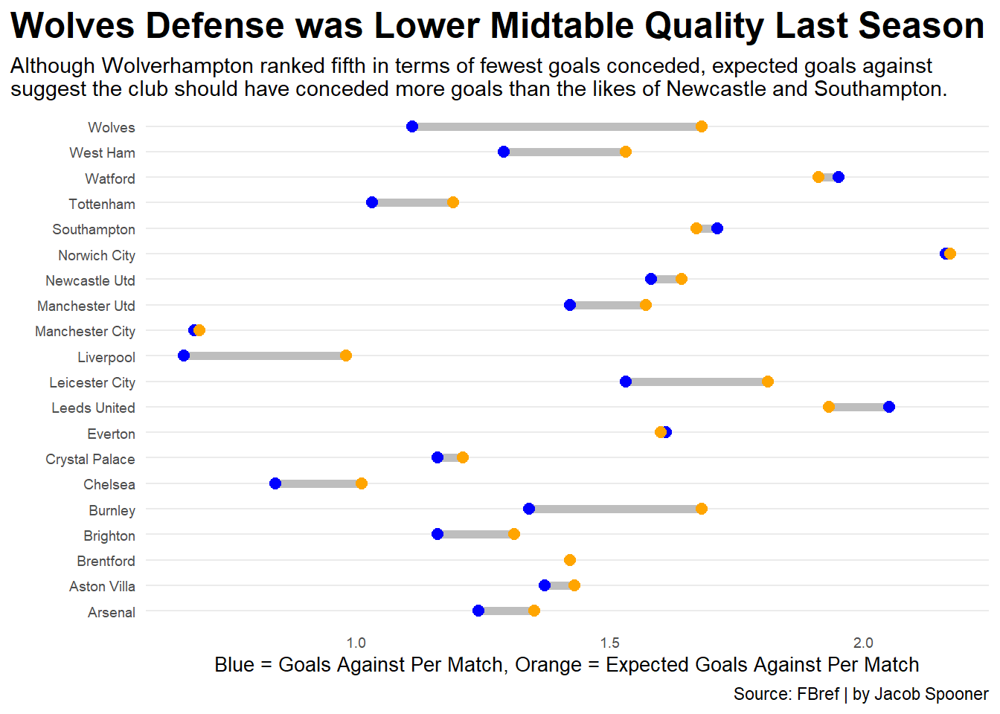
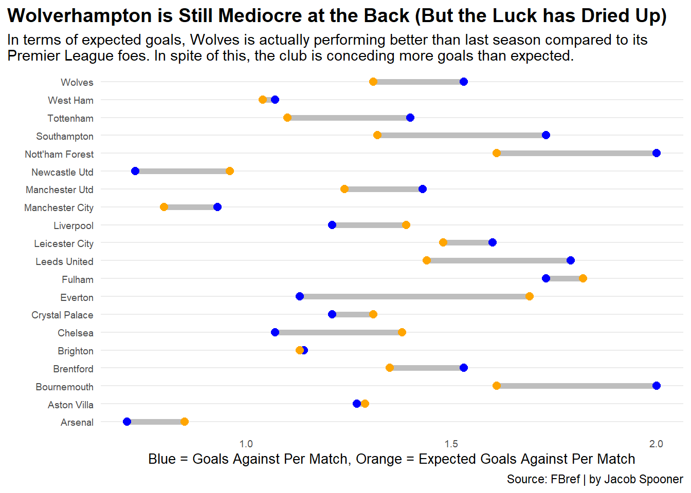
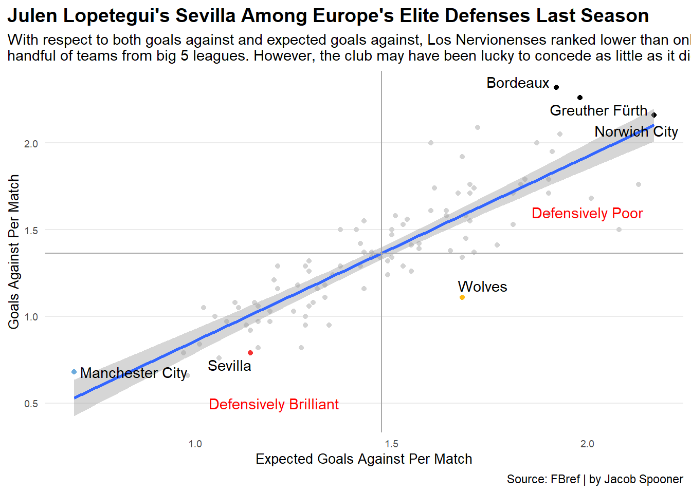

From Formidable to Floundering: The Decline and Possible Resurrection of Wolverhampton Wanderers’ Defense
wolves
code
analysis
Author
Jacob Spooner
Published
December 4, 2022
Back in 2016, fans of Wolverhampton Wanderers Football Club seemingly could only look to the distant past for comfort. After spending only four of the last 30 odd seasons in the English top flight, it seemed as if this club would remain a second division side for years to come. However, with the Fosun International takeover that summer, Wolves was provided with a financial backing beyond the wildest dreams of its supporters.
Following a rather average and disappointing first season under such ownership, Wolverhampton turned a corner in year two. The club finished top of the English Championship League (2nd division) and achieved promotion to the Premier League. Once there, Wolves took the league by storm. Successive seventh place finishes in 2018-19 and 2019-20 firmly established Wolves as a force to be reckoned with in the top flight. Unfortunately, that summer of 2020 would be as good as it got.
Plagued by numerous injuries and inadequately replacing a couple of key players who moved on to bigger clubs, Wolves limped to a 13th place finish in 2020-21. A change in management followed, and although Wolves managed a 10th place finish last season, the lack of form during the season’s concluding months was among the worst in the league.
Fast forward to the present day, and Wolverhampton Wanderers finds itself propping up the table 15 matches into the current campaign. The lack of options up top is quite astounding, and this team is allergic to scoring goals. This problem is not new, however, as even those sides that finished seventh struggled to score (although not nearly to the same extent as the team this season).
Undoubtedly, shyness in front of goal is a problem that is crippling this team. But what about this side’s performance in terms of conceding goals? At its peak under Fosun’s ownership, Wolverhampton was a tough team to break down. Sadly, that defensive solidity seems to have vanished, which, in tandem with the goal scoring issues, has put this club in a far from ideal state. How does Wolves current team compare defensively to those of the past five seasons? And what can we expect from a defensive standpoint moving forward under the recently appointed Julen Lopetegui?
One way of addressing the former of these questions is by examining not only goals against, but also expected goals against (number of goals a team should concede based on a mathematical model that takes various factors into account). Essentially, this allows one to draw conclusions about defensive performance based on the difference between a team’s goals against and expected against. So how do the last five Wolverhampton Wanderers seasons compare in terms of these metrics?
Code
library(worldfootballR)library(tidyverse)library(gt)library(ggalt)library(ggrepel)teamdata19 <-fb_big5_advanced_season_stats(2019,stat_type="standard",team_or_player="team", time_pause =3)teamdata20 <-fb_big5_advanced_season_stats(2020,stat_type="standard",team_or_player="team", time_pause =3)teamdata21 <-fb_big5_advanced_season_stats(2021,stat_type="standard",team_or_player="team", time_pause =3)teamdata22 <-fb_big5_advanced_season_stats(2022,stat_type="standard",team_or_player="team", time_pause =3)teamdata23 <-fb_big5_advanced_season_stats(2023,stat_type="standard",team_or_player="team", time_pause =3)teamdata19to23 <-bind_rows(teamdata19, teamdata20, teamdata21, teamdata22, teamdata23)wolves_opponent_data <- teamdata19to23 %>%filter (Squad =="Wolves", Team_or_Opponent =="opponent")wolves_goals_against <- wolves_opponent_data %>%select(Season_End_Year, Gls_Per, xG_Per) %>%mutate(Gls_Per_Minus_xG_Per = Gls_Per - xG_Per)wolves_goals_against %>%gt() %>%cols_label(Season_End_Year ="Season End Year",Gls_Per ="Goals Conceded",xG_Per ="Expected Goals Conceded",Gls_Per_Minus_xG_Per ="Difference" ) %>%tab_header(title ="Wolverhampton has Lacked Defensive Solitiy in Recent Times",subtitle ="Per 90 stats over the last five seasons paint the picture clearly. The amount of goals conceded has increased over the last three seasons with the exception of last, a season in which Wolves vastly outperformed its expected goals against." ) %>%tab_style(style =cell_text(color ="black", weight ="bold", align ="left"),locations =cells_title("title") ) %>%tab_style(style =cell_text(color ="black", align ="left"),locations =cells_title("subtitle") ) %>%tab_source_note(source_note =md("By: Jacob Spooner | Source: FBref") ) %>%tab_style(style =list(cell_fill(color ="#FDB913"),cell_text(color ="white") ),locations =cells_body(rows = Season_End_Year =="2022") )
Wolverhampton has Lacked Defensive Solitiy in Recent Times
Per 90 stats over the last five seasons paint the picture clearly. The amount of goals conceded has increased over the last three seasons with the exception of last, a season in which Wolves vastly outperformed its expected goals against.
Season End Year
Goals Conceded
Expected Goals Conceded
Difference
2019
1.11
1.11
0.00
2020
1.03
1.00
0.03
2021
1.29
1.30
-0.01
2022
1.11
1.68
-0.57
2023
1.53
1.31
0.22
By: Jacob Spooner | Source: FBref
Last season in particular is interesting as it indicates that Wolves defense was at its worse despite conceding fewer goals per match than the season prior and even the current one. Was Wolverhampton just lucky? A closer look at how the club compared to its Premier League counterparts provides greater perspective.
Code
pl_squads_22 <- teamdata22 %>%filter(Comp =="Premier League", Team_or_Opponent =="opponent")ggplot() +geom_dumbbell(data=pl_squads_22, aes(y=Squad, x=Gls_Per, xend=xG_Per),size =2,colour ="grey",colour_x ="blue",colour_xend ="orange") +labs(x="Blue = Goals Against Per Match, Orange = Expected Goals Against Per Match",y="",title="Wolves Defense was Lower Midtable Quality Last Season", subtitle="Although Wolverhampton ranked fifth in terms of fewest goals conceded, expected goals againstsuggest the club should have conceded more goals than the likes of Newcastle and Southampton.",caption="Source: FBref | by Jacob Spooner" ) +theme_minimal () +theme (plot.title =element_text(size =18, face ="bold"),axis.title =element_text(size =10),axis.text =element_text(size =7),axis.ticks =element_blank(),panel.grid.minor =element_blank(),panel.grid.major.x =element_blank(),plot.title.position ="plot" )

Wolverhampton Wanderers clearly had the largest discrepancy between goals against and expected goals against among all Premier League clubs. It is worth noting that José Sá was statistically one of the best goalkeepers in Europe last season, which in part may help explain for this discrepancy. However, it would take a brave man to conclude that this major difference is solely down to the brilliance of a goalkeeper.
While last season saw this massive overperformance in terms of conceding goals, the table shown earlier indicates that the story has been completely different this season. Wolves are clearly underperforming in this statistic, but how does its performance compare with the rest of the league?
Code
pl_squads_23 <- teamdata23 %>%filter(Comp =="Premier League", Team_or_Opponent =="opponent")ggplot() +geom_dumbbell(data=pl_squads_23, aes(y=Squad, x=Gls_Per, xend=xG_Per),size =2,colour ="grey",colour_x ="blue",colour_xend ="orange") +labs(x="Blue = Goals Against Per Match, Orange = Expected Goals Against Per Match",y="",title="Wolverhampton is Still Mediocre at the Back (But the Luck has Dried Up)", subtitle="In terms of expected goals, Wolves is actually performing better than last season compared to its Premier League foes. In spite of this, the club is conceding more goals than expected.",caption="Source: FBref | by Jacob Spooner" ) +theme_minimal () +theme (plot.title =element_text(size =14, face ="bold"),axis.title =element_text(size =10),axis.text =element_text(size =7),axis.ticks =element_blank(),panel.grid.minor =element_blank(),panel.grid.major.x =element_blank(),plot.title.position ="plot" )

It seems that whatever was papering over the cracks last season is no longer able to hide the defensive flaws of this team. In fact, the back five lauded for being defensively sound last season was actually conceding more expected goals relative to its competition than this season’s supposedly less secure back four.
Interestingly, there were reports earlier in the season that José Sá had been playing with a wrist injury, so maybe this partially explains the current predicament. Once again though, the gulf between this season and last regarding goals against and expected goals against surely comes down to more than a goalkeeper’s wrist.
Also intriguing is that, in stark contrast to last season, the majority of clubs are conceding more goals than expected this campaign. It is difficult to pinpoint exactly why this is, but it could be that over a smaller sample size of games, attacking players have been ridiculously clinical. Maybe Wolves have just happened to be on the receiving end of this. However, in the absence of further investigation, this remains rather speculative.
Switching gears back to the earlier mentioned supposedly less secure back four, the fact that Wolves have been playing this way is significant in the regard that Julen Lopetegui, the new Wolves manager, utilized a similar formation while managing at Sevilla. Although he was sacked after a poor start to this season, Lopetegui’s three prior seasons at Sevilla prior were highly successful as the club finished fourth in each of those La Liga campaigns. His teams were known to be solid at the back, but to what extent? How did his side stack up defensively in comparison to the top clubs in European football this past season?
Code
opponent_data22 <- teamdata22 %>%filter (Team_or_Opponent =="opponent")opponent_Goals_data22 <- opponent_data22 %>%select(Squad, xG_Per, Gls_Per)sev <- opponent_Goals_data22 %>%filter(Squad =="Sevilla")wwfc <- opponent_Goals_data22 %>%filter(Squad =="Wolves")defensively_poor <- opponent_Goals_data22 %>%filter(Gls_Per >=2.1)man_city <- opponent_Goals_data22 %>%filter(Squad =="Manchester City")averages22 <- opponent_Goals_data22 %>%ungroup() %>%summarise(Avg_Gls =mean(Gls_Per), Avg_xG =mean(xG_Per))ggplot() +geom_point(data=opponent_Goals_data22, aes(x=xG_Per, y=Gls_Per), color="light grey") +geom_point(data=sev, aes(x=xG_Per, y=Gls_Per, label=Squad), color="#f43333") +geom_point(data=wwfc, aes(x=xG_Per, y=Gls_Per, label=Squad), color="#FDB913") +geom_point(data=defensively_poor, aes(x=xG_Per, y=Gls_Per, label=Squad), color="black") +geom_point(data=man_city, aes(x=xG_Per, y=Gls_Per, label=Squad), color="#6CABDD") +geom_smooth(data=opponent_Goals_data22, aes(x=xG_Per, y=Gls_Per), method="lm") +geom_hline(yintercept=1.3642, color="dark grey") +geom_vline(xintercept=1.4741, color="dark grey") +geom_text(aes(x=1.2, y=0.5, label="Defensively Brilliant"), color="red") +geom_text(aes(x=2.0, y=1.6, label="Defensively Poor"), color="red") +geom_text_repel(data=sev, aes(x=xG_Per, y=Gls_Per, label=Squad)) +geom_text_repel(data=wwfc, aes(x=xG_Per, y=Gls_Per, label=Squad)) +geom_text_repel(data=defensively_poor, aes(x=xG_Per, y=Gls_Per, label=Squad)) +geom_text_repel(data=man_city, aes(x=xG_Per, y=Gls_Per, label=Squad)) +labs(x="Expected Goals Against Per Match",y="Goals Against Per Match",title="Julen Lopetegui's Sevilla Among Europe's Elite Defenses Last Season", subtitle="With respect to both goals against and expected goals against, Los Nervionenses ranked below only a handful of teams from big 5 leagues. However, the club may have been lucky not to concede more.",caption="Source: FBref | by Jacob Spooner" ) +theme_minimal() +theme (plot.title =element_text(size =14, face ="bold"),axis.title =element_text(size =10),axis.text =element_text(size =7),axis.ticks =element_blank(),panel.grid.minor =element_blank(),panel.grid.major.x =element_blank(),plot.title.position ="plot")

Clearly Lopetegui’s Sevilla was an extremely solid defensive unit. While it is true that Los Nervionenses outperformed its expected goals against, the club still had one of the best defenses in that regard.
Will Lopetegui bring similar stability to Wolverhampton Wanderers? Undoubtedly the transition from one of Spain’s bigger clubs to a team at the foot of the Premier League will be far from easy. However, he is an experienced manager who has been consistently implemented a formation similar to the one Wolves have been using all season.
The days of five at the back may be no more, but Julen Lopetegui’s side should be a tough nut to crack. Will this be the reality though? This past season of Sevilla’s seems to indicate so.